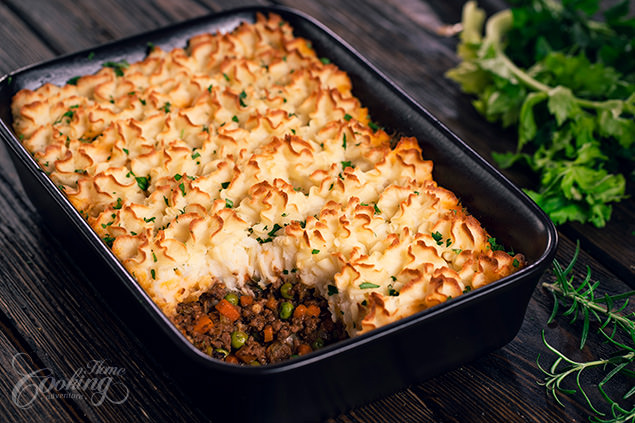

Shepherd's Pie!

Description
The Best Classic Shepherd's Pie - AKA Shepards Pie or Cottage Pie. Ground Beef (or lamb) with vegetables in a rich gravy, topped with cheesy mashed potatoes, and baked.
Ingredients
- Olive Oil
- Onions
- Garlic
- Carrots
- Rosemary
- Thyme
- Parsley
- Salt
- Pepper
- Meat (Beef or Lamb work best!)
- Potatoes
- Worcestershire Sauce
- Tomato paste
Steps
- Heat oil and garlic in a pan
- Add carrots to pan
- Add meat to pan
- Add tomato paste and worcestershire
- Boil potatoes and mash
- Add meat to pan and put potatoes on top
- Bake and enjoy!
Return Home